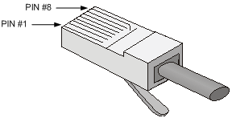
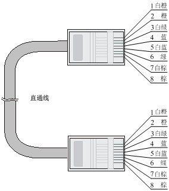
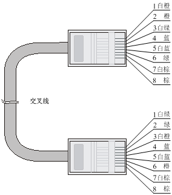
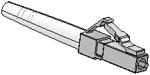

连接线缆介绍
以太网双绞线
概念
以太网双绞线（Twisted-Pair Cable）由不同颜色的8根具有绝缘保护层的铜导线组成，每两根导线按一定规则绞织在一起，共组成4对绞线对。
适用范围
以太网双绞线主要用于传输模拟信号，但也适用于数字信号的传输，特别适用于较短距离的信息传输，是目前局域网上常用的传输介质。
最大传输距离
以太网双绞线的最大传输距离为100m。如果要加大传输距离，在两段以太网双绞线之间可安装中继器，最多可安装4个中继器。如安装4个中继器连接5个网段，则最大传输距离可达500m。
RJ-45连接器
每条以太网双绞线通过两端安装的RJ-45连接器（俗称水晶头）将各种网络设备连接起来。RJ-45连接器的引脚序号如图D-1所示。
图D-1 RJ-45连接器引脚序号示意图 
线序标准
RJ-45连接器引脚序号与铜导线颜色具有一定的对应关系，EIA/TIA的布线标准中规定了两种双绞线的线序568A和568B。
- 标准568A
- 白绿–1，绿–2，白橙–3，蓝–4，白蓝–5，橙–6，白棕–7，棕–8。
- 标准568B
- 白橙–1，橙–2，白绿–3，蓝–4，白蓝–5，绿–6，白棕–7，棕–8。
双绞线类型
按照是否外加金属屏蔽层，以太网双绞线可分为屏蔽双绞线（Shielded Twisted-Pair，STP）和非屏蔽双绞线（Unshielded Twisted-Pair，UTP）。由于屏蔽双绞线应用的条件比较苛刻，且价格较高，目前大多数局域网使用的是非屏蔽双绞线。此处关于以太网双绞线的分类基于非屏蔽双绞线。
按电气性能分类
按照电气性能的不同，以太网双绞线可分为3类线、4类线、5类线、超5类线、6类线和7类线等类型，数字越大，级别越高、带宽也越宽。目前在局域网中常见的是5类线、超5类线和6类线。
| 双绞线类型 | 介绍 |
|---|---|
| 5类 | 适用于最高传输速率为100Mbps的数据传输，传输带宽是100MHZ |
| 超5类 | 适用于最高传输速率为1000Mbps的数据传输，传输带宽是100MHZ |
| 6类 | 适用于传输速率高于1Gbps的数据传输，传输带宽是250MHZ |
- 说明
- SR8800-F路由器的RJ-45以太网端口采用5类或5类以上以太网双绞线进行连接。
按线序分类
根据线序的不同，以太网双绞线可分为直通线（Straight-Through Twisted-Pair Cable）和交叉线（Crossover Twisted-Pair Cable）。
- 直通线
- 双绞线两端的线序都为标准568B，如图D-2所示。
- 交叉线
- 双绞线一端的线序为标准568B，另一端的线序为标准568A，如图D-3所示。
图D-2 直通线两端线序示意图 
图D-3 交叉线两端线序示意图 
直通线与交叉线使用原则
使用以太网双绞线连接设备时，应根据所连接的RJ-45以太网口类型选择以太网双绞线的类型。RJ-45以太网口分为MDI口和MDIX口两种类型，路由器和PC上的RJ-45以太网口为MDI口，路由器上的为MDIX口，MDI和MDIX口各引脚功能分配情况如表D-3和表D-4所示。
| 端口引脚序号 | 10Base-T/100Base-TX | 1000Base-T | ||
|---|---|---|---|---|
| 信号 | 功能 | 信号 | 功能 | |
| 1 | Tx+ | 发送数据 | BIDA+ | 双向数据线A+ |
| 2 | Tx- | 发送数据 | BIDA- | 双向数据线A- |
| 3 | Rx+ | 接收数据 | BIDB+ | 双向数据线B+ |
| 4 | 保留 | - | BIDC+ | 双向数据线C+ |
| 5 | 保留 | - | BIDC- | 双向数据线C- |
| 6 | Rx- | 接收数据 | BIDB- | 双向数据线B- |
| 7 | 保留 | - | BIDD+ | 双向数据线D+ |
| 8 | 保留 | - | BIDD- | 双向数据线D- |
| 端口引脚序号 | 10Base-T/100Base-TX | 1000Base-T | ||
|---|---|---|---|---|
| 信号 | 功能 | 信号 | 功能 | |
| 1 | Rx+ | 接收数据 | BIDB+ | 双向数据线B+ |
| 2 | Rx- | 接收数据 | BIDB- | 双向数据线B- |
| 3 | Tx+ | 发送数据 | BIDA+ | 双向数据线A+ |
| 4 | 保留 | - | BIDD+ | 双向数据线D+ |
| 5 | 保留 | - | BIDD- | 双向数据线D- |
| 6 | Tx- | 发送数据 | BIDA- | 双向数据线A- |
| 7 | 保留 | - | BIDC+ | 双向数据线C+ |
| 8 | 保留 | - | BIDC- | 双向数据线C- |
说明
- Tx=发送数据
- Rx=接收数据
- BI=双向数据
为保证设备正常通信，对于相连的两台设备，一端设备端口的发送数据的引脚需对应对端设备端口接收数据的引脚。因此，当两端设备都为MDI口或者MDIX口时，需使用交叉线连接，当一端为MDI口一端为MDIX口时，需使用直通线连接。直通线或交叉线的使用情况可以总结如下：
- 直通线用于连接不同类型设备，比如连接路由器和PC、路由器和路由器等。
- 交叉线用于连接同种类型设备，比如连接路由器和路由器、路由器和路由器、PC和PC等。
如果RJ-45以太网端口支持MDI/MDIX自适应特性，当MDI/MDIX自适应启用时，端口能自动适应不同线序（自动适应直通线或交叉线）。
- 说明
- SR8800-F路由器RJ-45以太网端口支持MDI/MDIX自适应特性。缺省情况下，端口启用MDI/MDIX自适应。
制作方法
以太网双绞线的制作步骤如下：
- 利用压线钳剪裁出计划需要使用的双绞线长度。
- 利用压线钳将线头剪齐，再将线头放入剥线专用的刀口，稍微用力握紧压线钳并慢慢旋转，让刀口划开双绞线的保护胶皮，并把这部分的保护胶皮去掉。（压线钳挡位离剥线刀口长度通常恰好为RJ-45连接器长度，这样可以有效避免剥线过长或过短。）
- 将4个线对的8条细导线逐一解开、理顺、扯直，然后按照规定的线序排列整齐。
- 利用压线钳的剪线刀口把细导线顶部裁剪整齐，缓缓地用力把8条细导线同时沿RJ-45连接器内的8个线槽插入，一直插到线槽的顶端，并确保每一根细导线都已经紧紧地顶在RJ-45连接器的末端。
- 把RJ-45连接器插入压线钳的槽中，用力握紧线钳，直到听到轻微的“啪”一声。
- 重复上述（2）至（5）步，制作双绞线另一端接头。
- 使用测试仪测试。
光纤
- 注意
- 当选用光纤连接网络设备时，同一通信线路中使用的可插拔接口模块、尾纤、跳纤、光缆的类型必须保持一致。即如果采用单模光纤进行连接，该通信线路中使用的可插拔接口模块、尾纤、跳纤、光缆都必须是单模类型。
简介
光纤
光纤是光导纤维（Optical Fiber）的简称，是一种传输光能的波导介质，一般由纤芯和包层组成。
光纤传输方式损耗低，传输距离远，在长距离传输方面具有优势。
按光在光纤中的传输模式不同，光纤可分为单模光纤（SMF，Single Mode Fiber）和多模光纤（MMF，Multi Mode Fiber）。
- 单模光纤
- 中心玻璃芯较细（10μm或更小），只能传一种模式的光。模间色散较小，适用于远程通讯。
- 多模光纤
- 中心玻璃芯较粗（50μm、62.5μm或更大），可传多种模式的光。模间色散较大，传输距离比较短，一般只有几公里。
光纤的最大拉伸力和压扁力如表D-5所示。
| 受力时间 | 拉伸力(N) | 压扁力(N/mm) |
|---|---|---|
| 短暂受力 | 150 | 500 |
| 长期受力 | 80 | 100 |
光缆
由于户外长距离传输的需要而将多根光纤封装在一起而组成的线缆称为光缆，光缆外皮一般为黑色，里面有钢丝保护。按封装的光纤类型不同，光缆有单模、多模之分。
跳纤
两端都有连接器的光纤为跳纤。跳纤用来做从设备到光纤布线链路的跳接线，一般用于连接光端机和终端盒。常见的跳纤有单模跳纤和多模跳纤。
- 单模跳纤
- 外皮一般为黄色，接头和保护套为蓝色，传输距离较长。
- 多模跳纤
- 外皮一般为橙色，接头和保护套为米色或者黑色，传输距离较短。
按接口类型来分，跳纤还分为SC跳纤、LC跳纤、FC跳纤等多种类型。跳纤长度的规格一般有0.5m、1m、2m、3m、5m、10m等。
尾纤
只有一端有连接器，而另一端是纤芯断头的光纤为尾纤。尾纤通过熔接与光缆的纤芯相连，常出现在光纤终端盒内，主要用于连接光缆和光纤收发器。
尾纤可分为单模尾纤（黄色）和多模尾纤（橙色）。按接口类型来分，尾纤还分为SC尾纤、LC尾纤、FC尾纤等多种类型。
光纤连接器
光纤连接器是光纤通信系统中不可缺少的无源器件，它的使用实现了光通道间的可拆式连接，使光系统的调测与维护更为方便。光纤连接器的种类很多，设备仅支持LC型光纤连接器，外观如图D-7所示。
图D-7 LC型光纤连接器外观示意图 
使用注意事项
在使用光纤进行连接时，请注意以下内容：
- 请确认光纤连接器及光纤的类型是否与所采用的可插拔接口模块的类型相符。
- SR8800-F路由器的部分配套单板上的光接口(如SFP光接口)具有屏蔽堵头，当需要使用这些光接口时，需要先取下屏蔽堵头。请妥善保管取下的屏蔽堵头，当不再使用这些光接口时，需要在这些光接口上重新安装上屏蔽堵头。
- 光纤连接器上具有防尘帽，在使用光纤连接器时，请妥善保管防尘帽。当不再使用时，光纤连接器上必须盖好防尘帽，以免在装配过程中将光纤连接器插芯端面划伤而影响其性能指标。如果防尘帽过松或有污染，请您及时更换。
- 使用光纤连接前，请用无尘纸沾无水酒精将光纤连接器插芯端面擦净，擦拭时只能向一个方向擦，同时也要擦拭与其对接的光纤接头端面。
- 请勿扭曲、弯折光纤，安装后光纤的弯曲半径不得小于40mm（动态弯曲情况下最小弯曲半径为20D，静态情况下为10D，D为光纤防尘帽外径）。
- 连接时，如果光纤需要穿过金属板孔，那么该金属板孔应具有光滑的、经过充分倒圆的表面（倒圆半径R应不小于2mm)，穿过金属板孔及沿结构件锐边转弯时，应加保护套或衬垫。
- 插拔光纤连接器时请勿用力过猛，避免用力拉、压、挤光纤。光纤允许的拉伸力和压扁力的最大值请参见表D-5。